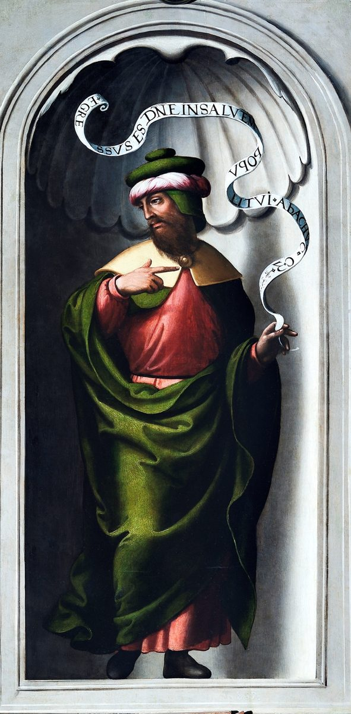

Habakkuk 3 — The Mister Translation

Habakkuk 3:13. The scroll carries the Latin of the Vulgate for this chapter, ‘egressus es in salutem populi tui’ (‘you went out for the salvation of your people’), with the book and chapter abbreviated at the end. The painter has the prophet point to himself while the verse about the people unrolls above him.
.jpg){kind=link}
Translator’s Notes
⚠ After two chapters of argument, the book ends as a psalm. The first verse of the book called what follows a burden that Habakkuk saw (1:1); the first verse of the last chapter calls it tefillah, a prayer. Tefillah is a heading in the Psalms (it stands in the headings of Psalms 17, 86, 90, 102 and 142), so the chapter announces itself as a psalm, and its last line (verse 19) confirms it with a musical direction. The man who argued and then waited at his post now sings.
⚠ Shigionoth is a word with no agreed meaning. It stands in two verses of the Hebrew Bible, here in the plural and in the singular, shiggayon, in the heading of Psalm 7. The old guess is a musical or poetic term, perhaps a kind of tune or rhythm, and the word al before it is “upon” or “to the mode of.” The shelf shows the uncertainty: KJV “upon Shigionoth,” ASV “set to Shigionoth,” NIV “On shigionoth”; NWT 1984 “in dirges,” a guess at a wandering, mournful tune; DRB “for ignorances” and Geneva “for the ignorances,” from the Latin, which read the word as errors; TLB “the prayer of triumph,” a paraphrase of a word that has not been explained. This translation leaves it in Hebrew, as the Psalms headings do.
The prayer is the prophet’s own. The heading says le-Chavaqquq, “of Habakkuk,” and then calls him ha-navi, “the prophet,” the title the book gave him in 1:1. Nothing in the book gives him another.
⚠ “I have heard” answers “you do not hear.” Shama’ti shim’akha, “I have heard what is heard of you” (the report, the fame), turns on the verb of the book’s first complaint: “How long must I cry for help and you do not hear” (1:2). The prophet who accused God of not listening is now the one who has listened, and the result is the verb of yare, fear. ASV “I have heard the report of thee,” NWT 1984 “I have heard the report about you,” NIV “I have heard of your fame,” KJV “I have heard thy speech,” DRB “I have heard thy hearing.”
⚠ “Your work” is the work of chapter 1, and “bring to life” the verb of chapter 2. Pa’olkha comes from the same root as the po’al God announced at 1:5, “a work is being done in your days that you would not believe.” The prophet now asks that this work be chayyehu, “given life,” the verb of yichyeh, “will live,” in 2:4. KJV and ASV “revive thy work,” DRB “bring it to life,” NWT 1984 “O bring it to life”; the NIV “Repeat them in our day” and TLB “begin again to help us” take the work as past acts to be done again.
“In the midst of the years,” twice. Be-qerev shanim is not a date. It can be “in our time, among the years we are living,” or “between the past and the end,” and the doubled phrase is a prayer that the work not wait for a distant age. The Greek Old Testament is reported to have read the two phrases as “between two living creatures you will be known,” the reading early Christian commentators linked to the ox and the donkey at the manger; the note at Isaiah 1:3 records that tradition.
⚠ “In turmoil remember compassion.” Rogez is the first of four words from one root, r-g-z, in this prayer (verses 2, 7 and twice in 16), the root of trembling and agitation. Rachem, compassion, is built on rechem, the womb. ASV “In wrath remember mercy,” NIV “in wrath remember mercy,” NWT 1984 “During the agitation, to show mercy may you remember.” Whether the turmoil is God’s anger or the shaking of the earth is left open by the Hebrew; “turmoil” keeps both.
⚠ God arrives by the southern road. Teman is an Edomite district (Obadiah 9, Amos 1:12) and Paran a desert in the Sinai region. Two older poems trace the same road. “Jehovah came from Sinai, and dawned upon them from Seir; he shone forth from Mount Paran” (Deuteronomy 33:2), and “Jehovah, when you went out from Seir, when you marched from the field of Edom, the earth trembled” (Judges 5:4). Habakkuk gives the road a third time, with Teman for Seir. Teiman is also the Hebrew word for “south” (Exodus 26:18 has teimanah, “southward”), and the DRB, from the Latin, takes it so: “God will come from the south.” KJV, ASV and NIV “God came from Teman,” NWT 1984 “God himself proceeded to come from Teman”; the TLB puts Sinai where the Hebrew has Teman: “I see God moving across the deserts from Mount Sinai.”
“God” here is Eloah, the singular of Elohim, a form found mostly in Job and in a few poems, among them the Song of Moses (Deuteronomy 32:15). And “the Holy One” is qadosh, the title Habakkuk used in his own complaint: “my Holy One” (1:12). The prophet who asked how a holy God could look on evil now sees the Holy One coming.
⚠ The first of three Selahs, and a verb that has been used before. After selah comes “his splendor covers the heavens, and the earth is full of his praise” (hod, tehillah). Kissah, “covers,” is the verb of the waters that “cover” the sea at 2:14 and of the violence that “will cover” the plunderer at 2:17; malea, “is full,” is the verb of “the earth will be filled” at 2:14. The promise of chapter 2 is stated here as something already coming up the road. KJV and ASV “His glory covered the heavens,” NWT 1984 “His dignity covered the heavens.”
⚠ “Rays flash from his hand” are, in the Hebrew, horns. Qarnayim is the dual of qeren, a horn, and the root is that of qaran, the verb for the shining of Moses’s face: “the skin of his face shone” (Exodus 34:29). The two readings are on the shelf. KJV “he had horns coming out of his hand,” Geneva “he had horns coming out of his hands,” DRB “horns are in his hands”; ASV “He had rays coming forth from his hand,” NIV “rays flashed from his hand,” NWT 1984 “He had two rays.” The shining of a face at Sinai and the shining at God’s hand are one verb family. And what the rays surround is chevyon, found only here: KJV “the hiding of his power,” NWT 1984 “the hiding of his strength was.” The light is what can be seen; the strength stays behind it.
Pestilence goes before him, fever at his feet. Dever is pestilence and resheph is burning fever, the word of the Song of Moses, “the devouring of fever” (Deuteronomy 32:24). The two are his attendants, one before and one behind. NWT 1984 “burning fever would go forth at his feet,” ASV “fiery bolts went forth at his feet,” KJV “burning coals went forth at his feet,” NIV “pestilence followed his steps”; the DRB has “the devil shall go forth before his feet,” because the Latin read resheph as a person, and scholars note that Resheph was also the name of a plague god in the neighboring cultures.
⚠ He stands, and the world moves. Amad, “he stands,” is the whole of what God does in verse 6, and the earth is measured, the nations made to leap, the mountains shattered. KJV and ASV “He stood, and measured the earth”; the NWT 1984 has “He stood still, that he might shake up the earth,” and the NIV “He stood, and shook the earth,” both reading the Hebrew as a verb for shaking rather than measuring. The next verb, vayyatter, is as uncertain: NWT 1984 “caused nations to leap,” NIV “made the nations tremble,” KJV “drove asunder the nations,” DRB “melted the nations.” This translation prints “leap,” which can be a start, a spring up, or a scattering. The same verb of standing will be said of the sun and moon in verse 11.
⚠ Older than the mountains. The mountains are harerei-ad, “everlasting,” and the hills givot olam, “age-old,” and yet they shatter and sink; then the verse ends on halikhot olam lo, “the ways of old are his.” It is the same word, olam, on both sides of the dash: the hills that look age-old are not as old as his ways. Habakkuk asked in chapter 1, “Are you not from of old (1:12)?” This is the answer in the prophet’s eyes. ASV “the eternal mountains were scattered,” KJV “the perpetual hills did bow,” NIV “the age-old hills collapsed,” and the ASV “His goings were as of old,” KJV “his ways are everlasting.”
Cushan and Midian: the south again. Kushan is found elsewhere only in Cushan-rishathaim, the king of Aram-naharaim, who held Israel for eight years in Judges 3:8 and 10; whether Habakkuk means his people or another tribe is not told. Paired with Midian, the home of Moses’s exile, it points south, as Teman and Paran did. KJV “I saw the tents of Cushan in affliction,” NIV “I saw the tents of Cushan in distress”; the DRB “I saw the tents of Ethiopia for their iniquity” and Geneva “For his iniquity I saw the tents of Cushan” read aven as the “iniquity” of 1:3; the NWT 1984 has “Under what is hurtful I saw the tents of Cushan.”
⚠ “Tremble” is the second r-g-z, and it is Exodus’s word. Yirgezun is the same word as yirgazun in the Song of the Sea, “The peoples have heard, they tremble” (Exodus 15:14), where the peoples around Israel hear of the sea and tremble. The prophet’s own sequence in verses 2 and 16, “I have heard … I tremble,” is that sequence turned on himself.
⚠ Another cavalry. The question is rhetorical, “Is it against the rivers that your anger burns, or against the sea?,” and the answer is in the last clause: God rides out for salvation (yeshuah), against the waters that stood between Israel and the land: “the waters were split” (Exodus 14:21). And the horses are God’s own. At 1:8 the Chaldean horses were swifter than leopards and came for violence; here the prophet sees another set of horses and chariots, and the second set belongs to Jehovah. ASV “Was Jehovah displeased with the rivers?” and “Upon thy chariots of salvation,” NWT 1984 “your chariots were salvation,” NIV “Were you angry with the rivers” and “your chariots to victory.”
⚠ Verse 9 is the hardest line in the chapter. “Your bow is stripped utterly bare” is clear: erya te’or, a cognate pair from the verb arah, to strip, as a bow is taken out of its case. The next four words, shevu’ot matot omer, have two or three senses each: shevu’ot is “oaths” (or “sevens”), matot is “tribes” or “rods” (the same noun as the “rods” of verse 14), omer is “word.” The shelf: KJV “according to the oaths of the tribes, even thy word,” ASV “The oaths to the tribes were a sure word,” NWT 1984 “The sworn oaths of the tribes are the thing said,” DRB “according to the oaths which thou hast spoken to the tribes,” NIV “you called for many arrows.” This translation prints the reading closest to the consonants, the tribes’ oaths, and says only that it is one of several. The end of the verse is clear again: naharot tevaqqa-aretz, “You split the earth with rivers,” with the verb of the split sea.
The mountains writhe; the deep lifts its hands. Yachilu is the word for the pangs of birth: NIV “the mountains saw you and writhed,” NWT 1984 “Mountains saw you; they got to be in severe pains,” KJV “The mountains saw thee, and they trembled,” ASV “The mountains saw thee, and were afraid.” And the tehom, the deep of the first verses of Genesis, is given a voice and hands: KJV “the deep uttered his voice, and lifted up his hands on high,” TLB “The mighty deep cried out, announcing its surrender.” The oldest chaos in the Bible lifts its hands like a man giving up.
⚠ The sun and moon stand. Joshua 10:13 has “the sun was still, and the moon stood,” two verbs, at a human command. Here amad, “stand,” is said of both, and no one commands it: they stand in their zevul, “lofty dwelling,” the word the temple is called at 1 Kings 8:13, “a house of habitation,” because the arrows and the spear of God make them stop. ASV and KJV “The sun and moon stood still in their habitation,” NWT 1984 “in the lofty abode thereof,” NIV “Sun and moon stood still in the heavens.”
⚠ The sledge turned around. Tadush, “you thresh,” is the image of Amos 1:3, where Damascus “threshed Gilead with sledges of iron” (Amos 1:3): there the cruel one threshes; here God threshes the nations. NWT 1984 “In anger you went threshing the nations,” ASV “Thou didst thresh the nations in anger,” KJV “thou didst thresh the heathen in anger.”
⚠ “You go out for the salvation of your people” answers the first complaint in its own root. Yatzata, “you go out,” is the verb of Judges 5:4, “when you went out from Seir.” And yesha, “salvation,” is the root of the book’s opening charge: “and you do not save” (lo tosia, 1:2). The prophet who said you do not save now sees the one who goes out for salvation; the root has been in the prayer since verse 8 (yeshuah), is doubled here, and returns in verse 18 as “the God of my salvation” (yasha).
⚠ Whose “anointed”? Meshichekha is the singular, mashiach, in parallel with “your people,” and the Hebrew does not say whom it means: the king, the people as a whole, or the one the tradition expects. The particle before it, et, is either the sign of the object or “with,” and the shelf splits on that too: KJV “even for salvation with thine anointed,” Geneva “even for salvation with thine Anointed,” DRB “for salvation with thy Christ”; ASV “For the salvation of thine anointed,” NIV and NWT 1984 “to save your anointed one.” Different traditions have read it differently, and this translation prints the Hebrew without choosing.
The head of the house of the wicked. Rasha, “the wicked,” is the word of both of the prophet’s accusations: “the wicked hem in the righteous” (1:4) and “the wicked swallows one more righteous than himself” (1:13). Now it is the house of the wicked that is crushed, and the foundation is laid bare to the neck (arot, from the same verb of stripping as the bow of verse 9). A crushed head recalls Genesis 3:15, but that verse uses a different verb, and nothing in Habakkuk’s Hebrew points back to it. KJV “thou woundedst the head out of the house of the wicked, by discovering the foundation unto the neck,” NIV “you stripped him from head to foot,” TLB “laid bare his bones from head to toe.” The scroll marks an open paragraph break (petuchah) after the third selah.
⚠ His own rods; and the same verb of devouring. The enemy is pierced “with his own rods” (bemattav, the noun of verse 9), a sentence of poetic justice. Perazav is uncertain, “warriors” or “villagers”: ASV “Thou didst pierce with his own staves the head of his warriors,” NWT 1984 “With his own rods you pierced the head of his warriors,” KJV “the head of his villages,” NIV “With his own spear you pierced his head.” The prophet says “scatter me,” speaking as the people. And their glee is le’echol ani, “to devour the poor,” the very phrase used of the Chaldean horsemen who “fly like a vulture swooping to devour” (le’echol, 1:8): KJV “their rejoicing was as to devour the poor secretly,” NWT 1984 “Their high glee was as of those bent on devouring an afflicted one in a place of concealment.”
“You tread the sea.” Darakhta is “you tread,” and it will return in the last verse (yadrikheni, “makes me tread”). In the Song of the Sea the horse and its rider are thrown into the sea (Exodus 15:1); here God’s own horses tread through it. ASV “Thou didst tread the sea with thy horses,” KJV “Thou didst walk through the sea with thine horses, through the heap of great waters,” NIV “You trampled the sea with your horses.”
⚠ The body of a man who has heard. The vision is over, and the effect is in the prophet’s belly, lips, bones and legs. Vatirgaz bitni, “my belly trembled,” and ergaz, “I tremble,” are the third and fourth words of the r-g-z root, which began with God’s turmoil in verse 2 and the tents of Midian in verse 7. KJV “my belly trembled; my lips quivered at the voice,” ASV “my body trembled,” NWT 1984 “my belly began to be agitated,” NIV “my heart pounded.” “Rottenness enters my bones” is ASV “Rottenness entereth into my bones,” NIV “decay crept into my bones.”
The lips “quiver” as ears tingle. Tzalelu is the verb of the news of disaster that makes the ears of whoever hears it tingle: “a thing in Israel at which both ears of everyone who hears it will tingle” (1 Samuel 3:11), and again in Jeremiah 19:3 and 2 Kings 21:12. Here the tingling has moved from the ears to the lips.
⚠ “That I should wait quietly.” Asher anuach, “that I should rest,” is the verb nuach, and the sentence can mean “because I must wait quietly,” “so that I may rest,” or “yet I will wait patiently”: ASV “Because I must wait quietly for the day of trouble,” NWT 1984 “that I should quietly wait for the day of distress,” KJV “that I might rest in the day of trouble,” NIV “Yet I will wait patiently for the day of calamity.” The prophet who stationed himself at his watch in 2:1 and was told “wait for it” (2:3) is here, shaking in every limb, still waiting.
⚠ “To raid them”: Gad’s verb. Yegudenu is found in only one other verse, the blessing of Gad: “Gad — a raiding band shall raid him, but he shall raid at their heel” (Genesis 49:19), a pun on Gad’s name (gud). The verb that gave Gad a raider’s courage is here said of the invader who raids Judah. KJV “he will invade them with his troops,” NWT 1984 “he may raid them,” ASV “the people that invadeth us.”
⚠ Six things fail, in three pairs. The fig tree and the vine; the olive and the fields; the flock and the herd. The orchard, the field and the barn, which is a whole economy, undone. Kichesh, “fails,” is the kachash that means to deceive or deny: the olive “lies.” The vision of 2:3 “does not lie” (a different verb, kazav); the olive does. KJV “the labour of the olive shall fail,” ASV “The labor of the olive shall fail,” NWT 1984 “the work of the olive tree may actually turn out a failure” and “the terraces themselves may actually produce no food,” KJV “the fields shall yield no meat,” “the flock shall be cut off from the fold.” Joel 1:12 has the vine drying up and the fig tree languishing, as a plague; here they are the stage on which a man says yet.
⚠ “Yet I will exult in Jehovah.” Va’ani, “and I,” sets one person against the six failures, and e’lozah is a verb of exulting that differs by one letter from the verb of Hannah’s song, with the same partner: “My heart exults in Jehovah … for I rejoice in your salvation” (1 Samuel 2:1), exulting and salvation together. The enemy’s “glee” at verse 14 (alitzutam) is Hannah’s verb, spelled as hers: the wicked exult over the poor; the prophet will exult over nothing but Jehovah. And Elohei yish’i, “the God of my salvation,” closes the thread of yesha begun at verse 8. ASV “Yet I will rejoice in Jehovah,” NWT 1984 “I will exult in Jehovah himself.”
⚠ The last verse quotes David. Vayyasem raglai ka’ayyalot ve’al bamotai yadrikheni is almost word for word meshavveh raglai ka’ayyalot ve’al bamotai ya’amidheni in David’s song: “He makes my feet like those of hinds, and sets me upon my high places” (2 Samuel 22:34). Only the verbs change, and the last of them, from “sets me up” to “makes me tread,” is Deuteronomy’s promise to Israel: “you shall tread upon their high places” (Deuteronomy 33:29), and the verb of God treading the sea in verse 15. A hind (ayyalah) is the surefooted animal of the rocks, and Genesis 49:21 uses it for Naphtali, “a doe let loose.” ASV “he maketh my feet like hinds’ feet,” KJV “he will make me to walk upon mine high places,” NWT 1984 “he will make my feet like those of the hinds,” NIV “he enables me to tread on the heights,” TLB “he will give me the speed of a deer.” The bamot are heights here, not shrines.
“My strength” is chayli, a word that also means an army, and Jehovah is the only force the prophet names for himself. ASV “Jehovah, the Lord, is my strength,” NWT 1984 “my vital energy.” The Hebrew has Yehovih Adonai, “Jehovah the Lord,” which this translation keeps in the Hebrew order.
⚠ The last line is a heading at the wrong end. Lamnatzeach binginotai, “for the director, on my stringed instruments.” Lamnatzeach stands in fifty-four verses of the Psalms, and every one of them is a heading, at the start of a psalm; this is the only place it closes one. KJV “To the chief singer on my stringed instruments,” ASV “For the Chief Musician, on my stringed instruments,” NIV “For the director of music. On my stringed instruments,” NWT 1984 “To the director on my stringed instruments,” Geneva “To the chief singer on Neginoth.” The book that opened with a complaint left unanswered closes by handing the whole prayer to the choir, with the prophet’s own instruments (binginotai, “my”) accompanying it. And the chapter reads as the picture of what 2:4 means: the righteous lives by his faithfulness, and faithfulness here is a man with an empty barn who sings.
Patterns worth carrying forward
Where this translation keeps the exact / distinct words: “bring to life” for chayyehu (v2), the verb of yichyeh at 2:4; “turmoil / tremble” for the four r-g-z words (vv2, 7, 16 twice); “cover” and “full” for kisah and malea (v3), the verbs of 2:14 and 2:17; “rays” for qarnayim (v4), horns in the Hebrew; “burning fever” for resheph (v5); “age-old” for olam on both hills and ways (v6); “salvation” for yesha (vv8, 13, 13, 18); “stripped bare” for arah (vv9, 13); “stand” for amad (vv6, 11); “rods” for matteh in v14; “tread” for darakh (vv15, 19); “glee” and “exult” for alitzut and a’lozah (vv14, 18); and “hinds” and “high places” as in David’s song.
Echoes paid. From chapter 1: massa and chazah of 1:1 become tefillah; “you do not hear” and “you do not save” of 1:2 are answered in verses 2 and 13; the po’al of 1:5; the horses of 1:8; “from of old” of 1:12; the wicked of 1:4 and 1:13. From chapter 2: “wait for it” and “the righteous will live” of 2:3–4, the filling and covering of 2:14, and the hush of 2:20. From earlier books: Deuteronomy 33:2 and Judges 5:4 for the road from the south; Exodus 34:29 for the shining; Deuteronomy 32:24 for the fever; Exodus 15:14 for the trembling peoples; Joshua 10:13 for the sun and moon; Genesis 49:19 for Gad’s raiders and 49:21 for the doe; 1 Samuel 2:1 for the exulting; 2 Samuel 22:34 and Deuteronomy 33:29 for the hinds’ feet and the high places.
Echoes planted. With this chapter Habakkuk is complete, and the notes point forward only to texts yet to come in this translation: David’s song as the psalter has it, with the same hinds’ feet, at Psalm 18:34, the heading Shiggayon at Psalm 7, the five psalms headed Prayer (17, 86, 90, 102, 142), and the threshing of the nations at Isaiah 41:15. And in the neighboring book of the Twelve, Zephaniah 1, already on these pages, the “day of Jehovah” sweeps the earth, the kind of day Habakkuk calls the day of distress.